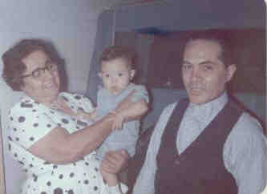

Igor Mikael Damiani
Nosso filho Igor Mikael nasceu no dia 02-12-1962 num domingo, e por obra do acaso, na mesma data do primeiro aniversário do nosso casamento.
 • fotos: vó Julieta - Igor Mikael -vô Miguel. |
Igor Mikael Damiani
Nosso filho Igor Mikael nasceu no dia 02-12-1962 num domingo, e por obra do acaso, na mesma data do primeiro aniversário do nosso casamento.
 • fotos: vó Julieta - Igor Mikael -vô Miguel. |
Início | Sumário | Sobrenomes | Lista de Nomes
Este Local de Rede foi Criado 1 Nov 2005 com Legacy 6.0 de Millennia
 Notas Gerais:
Notas Gerais: